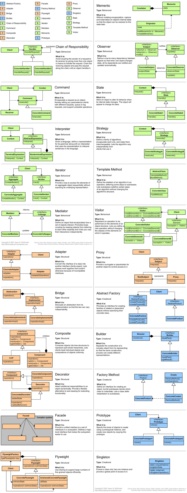

虽然图已经很老了，但是很直观，有收藏价值。
更好的一个网站，详细的介绍设计模式： http://www.oodesign.com/
另一个站点： http://www.javacamp.org/designPattern/
http://stackoverflow.com上一个帖子，总结了Java SE和 Java EE中实现的设计模式。
以及Design Patterns in the JDK
还有PDF版的

JDK中设计模式的实现
Creational patterns
Abstract factory (recognizeable by creational methods returning the factory itself which in turn can be used to create another abstract/interface type)
javax.xml.parsers.DocumentBuilderFactory#newInstance()javax.xml.transform.TransformerFactory#newInstance()javax.xml.xpath.XPathFactory#newInstance()
Builder (recognizeable by creational methods returning the instance itself)
java.lang.StringBuilder#append()(unsynchronized)java.lang.StringBuffer#append()(synchronized)java.nio.ByteBuffer#put()(also onCharBuffer,ShortBuffer,IntBuffer,LongBuffer,FloatBufferandDoubleBuffer)javax.swing.GroupLayout.Group#addComponent()- All implementations of
java.lang.Appendable
Factory method (recognizeable by creational methods returning an implementation of an abstract/interface type)
java.util.Calendar#getInstance()java.util.ResourceBundle#getBundle()java.text.NumberFormat#getInstance()java.nio.charset.Charset#forName()java.net.URLStreamHandlerFactory#createURLStreamHandler(String)(Returns singleton object per protocol)
Prototype (recognizeable by creational methods returning a different instance of itself with the same properties)
java.lang.Object#clone()(the class has to implementjava.lang.Cloneable)
Singleton (recognizeable by creational methods returning the same instance (usually of itself) everytime)
Structural patterns
Adapter (recognizeable by creational methods taking an instance of different abstract/interface type and returning an implementation of own/another abstract/interface type which decorates/overrides the given instance)
java.util.Arrays#asList()java.io.InputStreamReader(InputStream)(returns aReader)java.io.OutputStreamWriter(OutputStream)(returns aWriter)javax.xml.bind.annotation.adapters.XmlAdapter#marshal()and#unmarshal()
Bridge (recognizeable by creational methods taking an instance of different abstract/interface type and returning an implementation of own abstract/interface type which delegates/uses the given instance)
- None comes to mind yet. A fictive example would be
new LinkedHashMap(LinkedHashSet<K>, List<V>)which returns an unmodifiable linked map which doesn't clone the items, but uses them. Thejava.util.Collections#newSetFromMap()andsingletonXXX()methods however comes close.
Composite (recognizeable by behavioral methods taking an instance of same abstract/interface type into a tree structure)
java.awt.Container#add(Component)(practically all over Swing thus)javax.faces.component.UIComponent#getChildren()(practically all over JSF UI thus)
Decorator (recognizeable by creational methods taking an instance of same abstract/interface type which adds additional behaviour)
- All subclasses of
java.io.InputStream,OutputStream,ReaderandWriterhave a constructor taking an instance of same type. java.util.Collections, thecheckedXXX(),synchronizedXXX()andunmodifiableXXX()methods.javax.servlet.http.HttpServletRequestWrapperandHttpServletResponseWrapper
Facade (recognizeable by behavioral methods which internally uses instances of different independent abstract/interface types)
javax.faces.context.FacesContext, it internally uses among others the abstract/interface typesLifeCycle,ViewHandler,NavigationHandlerand many more without that the enduser has to worry about it (which are however overrideable by injection).javax.faces.context.ExternalContext, which internally usesServletContext,HttpSession,HttpServletRequest,HttpServletResponse, etc.
Flyweight (recognizeable by creational methods returning a cached instance, a bit the "multiton" idea)
Proxy (recognizeable by creational methods which returns an implementation of given abstract/interface type which in turn delegates/uses a different implementation of given abstract/interface type)
java.lang.reflect.Proxyjava.rmi.*, the whole API actually.
The Wikipedia example is IMHO a bit poor, lazy loading has actually completely nothing to do with the proxy pattern at all.
Behavioral patterns
Chain of responsibility (recognizeable by behavioral methods which (indirectly) invokes the same method in another implementation of same abstract/interface type in a queue)
Command (recognizeable by behavioral methods in an abstract/interface type which invokes a method in an implementation of a different abstract/interface type which has been encapsulated by the command implementation during its creation)
- All implementations of
java.lang.Runnable - All implementations of
javax.swing.Action
Interpreter (recognizeable by behavioral methods returning a structurally different instance/type of the given instance/type; note that parsing/formatting is not part of the pattern, determining the pattern and how to apply it is)
java.util.Patternjava.text.Normalizer- All subclasses of
java.text.Format - All subclasses of
javax.el.ELResolver
Iterator (recognizeable by behavioral methods sequentially returning instances of a different type from a queue)
- All implementations of
java.util.Iterator(thus among others alsojava.util.Scanner!). - All implementations of
java.util.Enumeration
Mediator (recognizeable by behavioral methods taking an instance of different abstract/interface type (usually using the command pattern) which delegates/uses the given instance)
java.util.Timer(allscheduleXXX()methods)java.util.concurrent.Executor#execute()java.util.concurrent.ExecutorService(theinvokeXXX()andsubmit()methods)java.util.concurrent.ScheduledExecutorService(allscheduleXXX()methods)java.lang.reflect.Method#invoke()
Memento (recognizeable by behavioral methods which internally changes the state of the whole instance)
java.util.Date(the setter methods do that,Dateis internally represented by alongvalue)- All implementations of
java.io.Serializable - All implementations of
javax.faces.component.StateHolder
Observer (or Publish/Subscribe) (recognizeable by behavioral methods which invokes a method on an instance of another abstract/interface type, depending on own state)
java.util.Observer/java.util.Observable(rarely used in real world though)- All implementations of
java.util.EventListener(practically all over Swing thus) javax.servlet.http.HttpSessionBindingListenerjavax.servlet.http.HttpSessionAttributeListenerjavax.faces.event.PhaseListener
State (recognizeable by behavioral methods which changes its behaviour depending on the instance's state which can be controlled externally)
javax.faces.lifecycle.LifeCycle#execute()(controlled byFacesServlet, the behaviour is dependent on current phase (state) of JSF lifecycle)
Strategy (recognizeable by behavioral methods in an abstract/interface type which invokes a method in an implementation of a different abstract/interface type which has been passed-in as method argument into the strategy implementation)
java.util.Comparator#compare(), executed by among othersCollections#sort().javax.servlet.http.HttpServlet, theservice()and alldoXXX()methods takeHttpServletRequestandHttpServletResponseand the implementor has to process them (and not to get hold of them as instance variables!).javax.servlet.Filter#doFilter()
Template method (recognizeable by behavioral methods which already have a "default" behaviour definied by an abstract type)
- All non-abstract methods of
java.io.InputStream,java.io.OutputStream,java.io.Readerandjava.io.Writer. - All non-abstract methods of
java.util.AbstractList,java.util.AbstractSetandjava.util.AbstractMap. javax.servlet.http.HttpServlet, all thedoXXX()methods by default sends a HTTP 405 "Method Not Allowed" error to the response. You're free to implement none or any of them.